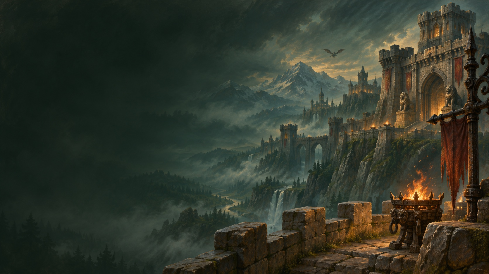

Your actual WhatsApp
Existing chats, groups and contact photos through official WhatsApp Web. Link by QR code; your friends don't need another app.

WHATSAPP FOR WORLD OF WARCRAFT
Your raid. Your people. One less reason to tab out.
Keep WhatsApp beside WoW, dressed for Azeroth.
Free & open source ◆ macOS & Windows

A LITTLE MORE /WHISPER. A LITTLE LESS ALT-TAB.
WoW Whisper is a free, open-source WhatsApp desktop companion for World of Warcraft on Mac and Windows. It brings official WhatsApp Web into a movable, resizable panel with the metalwork, stone textures and gold lettering you know.
It runs separately from the game. No Lua installation, no game-file changes. Just link your phone, keep WoW windowed or borderless, and keep your people close.
Your installation quest logMESSAGES FROM OUTSIDE AZEROTH
Boss mechanics are predictable.
These people have your phone
number.
EQUIPPED FOR YOUR EVENING
Stone, steel and familiar whispers. The Warcraft treatment, without starting your conversations from scratch.
Existing chats, groups and contact photos through official WhatsApp Web. Link by QR code; your friends don't need another app.
Shows over WoW, hides when you switch away, and returns without taking keyboard focus. Drag it, resize it, pin it.
WhatsApp supplies emoji, pictures and voice-note controls. Audio and recording depend on WebView support and microphone permission.
Uses your system's WebView. No project relay server, custom messaging protocol or app analytics. The source is yours to inspect.
YOUR MOST USEFUL DEFENSIVE COOLDOWN
Show or hide. Control on Mac, too.
QUEST ACCEPTED
Choose your Mac or Windows build. Extract the ZIP and open WoW Whisper.
WhatsApp → Linked devices → Link a device. Scan the QR code in the app.
Use windowed or borderless WoW. Keep the panel visible for live messages.
ADD TO YOUR INVENTORY
Free builds, straight from GitHub. Pick your platform.
macOS · APPLE SILICON
M-series chip · macOS 14+
Download Apple SiliconmacOS · INTEL
Intel processor · macOS 14+
Download IntelWINDOWS · x64
Windows 10/11 · WebView2
Download Windows
Community builds: Mac apps are ad-hoc signed, not notarized; Windows
apps are unsigned.
Read the
installation guide for operating-system
prompts.
Check your download's checksum ↗
ASK THE INNKEEPER
What it does. How it connects.
Where the edges are.
WoW Whisper is designed for players who want a Warcraft-styled WhatsApp panel beside windowed or borderless World of Warcraft on Mac or Windows. It combines familiar UI styling, existing WhatsApp chats and a show/hide shortcut. The best fit depends on how you play: check the supported systems and limitations before installing.
It is a separate Rust desktop companion with an addon-like appearance. There is no Lua addon, CurseForge installation or Interface/AddOns folder. It hosts official WhatsApp Web and does not change game files, read game memory or automate gameplay. No WoW restart is required.
Yes. Download builds target macOS 14+ on Apple Silicon and Intel, and Windows 10/11 x64 with Microsoft WebView2. Use WoW in windowed or borderless mode. Exclusive fullscreen, separate macOS fullscreen Spaces, Windows on ARM and Linux are not supported release targets.
WoW Whisper does not depend on the game's Lua API. Its foreground detector recognises the World of Warcraft Mac bundle and common Retail, Classic and test-client executables on Windows. Each client and operating-system combination still needs testing. Use windowed or borderless mode and report an unrecognised client through GitHub.
Keep the panel connected and visible while WoW is in front. WhatsApp Web receives messages; incoming messages do not intentionally take keyboard focus. Hidden toast notifications are not implemented. An offline or sleeping computer, or a suspended WebView, cannot be relied on for delivery.
WhatsApp Web supplies contact photos, emoji, images and voice-note controls. Recording needs normal microphone permission and WebView support. Media flows still need manual testing on each OS; Windows linked-account and game testing remains outstanding. Calls, camera, screen sharing, external-link opening and attachment downloads are not supported.
The app loads https://web.whatsapp.com in the system WebView. WhatsApp handles linking, messages and its encryption. There is no project relay server or custom WhatsApp protocol. This is an independent, unaudited fan project, unaffiliated with Blizzard, WhatsApp or Meta. It cannot promise vendor approval or ban-free use. Revoke the session at any time from Linked devices on your phone.
Yes. Original code and documentation use the MIT license. Blizzard's artwork and font, WhatsApp's service and trademarks, and third-party dependencies retain their own rights and licenses. Attribution does not grant redistribution rights. See the full third-party notices.
Your friends don't have
to be in your guild.